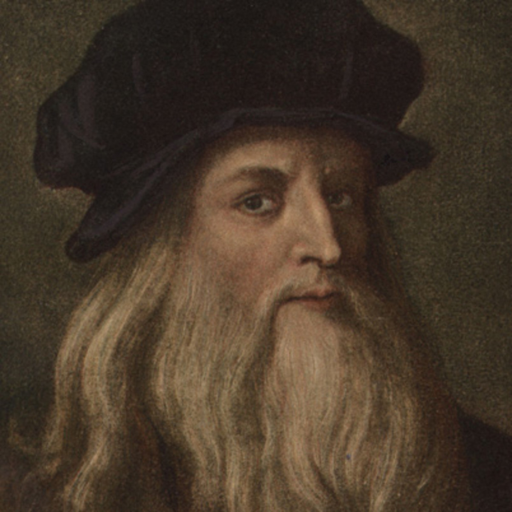
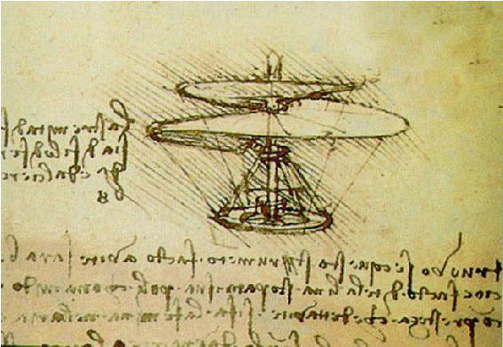
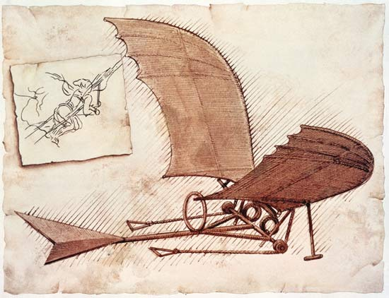

Historical Aspects
Ever heard of this man?
Leonardo Da Vinci
Leonardo da Vinci (April 15, 1452 to May 2, 1519) was a painter, sculptor, architect, inventor, military engineer and draftsman — the epitome of a “Renaissance man.” With a curious mind and keen intellect, da Vinci studied the laws of science and nature, which greatly informed his work. His ideas and body of work have influenced countless artists and made da Vinci a leading light of the Italian Renaissance.
He was fascinated by the flight of bats and birds and had hundreds of pages showing the motion of their wings whilst in flight and while pulling maneuvers for turning etc. You can see a clear parallel between the bird and bat wings he drew and his designs for flying machines.
Here are some of is inventions for Flying Machines and also includes some mechanisms that are necessary for flight –
1.Concept Helicopter
2.The Glider
3.The Parachute
4.Landing Gear
Concept Helicopter
Leonardo’s invention for the Helicopter was most likely conceptualized while he was either studying or examining the seeds of the Maple Tree. This is the seed that most of us played with as children whereby it spins as it is dropping. Undoubtedly while watching the seeds fall Leonardo asked himself the following question – “If the seed spins while it is falling, would it rise through the air if it was spun?”. Leonardo often based his designs on things he had observed in nature – he designed his glider based on a Bat’s wing & he designed his Tanks exterior walls based on a tortoise shell. The way Leonardo saw it was that he was taking inspiration from the greatest engineer of all time – Nature.
Leonardo's Glider
The above shows his sketch for the actual glider, you can see how he was inspired by the by wings above –
Although it is highly unlikely that he built this machine, it does leave a few things unanswered and some historians believe that he may have built it, watch the video below to see